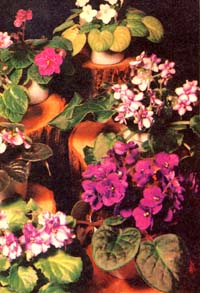

Beautiful African violets like the ones shown to the left are grown by Mrs. Mary Fink of Hendersonville, North Carolina in the simple, straightforward setup pictured immediately below. Mrs. Fink raises the flowers in her basement and sells them from a booth at the indoor ""curb market"" which is open three mornings each week in MOTHER's own little mountain town. Note the differences as well as the similarities between Mrs. Fink's operation and the drawing of Phillip S. Duke's own African violet growing bench in Chicago.